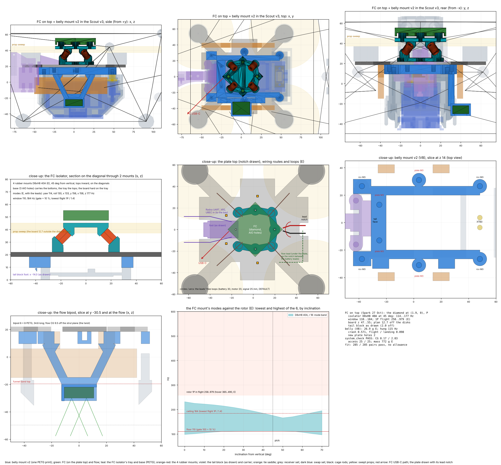
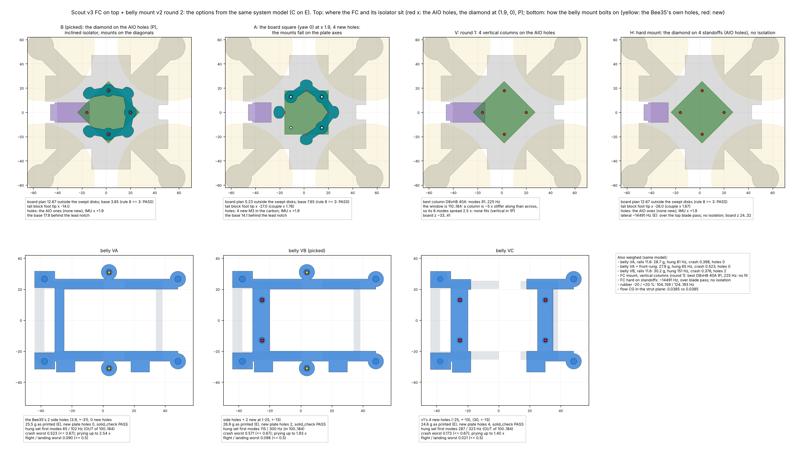

Spark, 27 Oct: "the fc can live anywhere lets just do on top". Round 2 fixes the review: the FC sits on its measured holes (the diamond at (1.9, 0)) on a printed isolator, 4 rubber mounts at 45° whose 6 modes all sit between 110 and 184 Hz, under the lowest rotor 1P / 1.4. The belly mount bolts on the Bee35's 2 side holes plus 2 new ones, so the hung battery set's first mode is 115 Hz. The tail block stays as drawn.


| Option | Modes (Hz) | Holes | Tail block |
|---|---|---|---|
| B: diamond, isolator | 114..177 | AIO, none new | as drawn |
| A: square, isolator | as B | 4 new | foot to −27 |
| V: vertical columns | 91..225 | AIO | as drawn |
| H: hard standoffs | ~14 500 | AIO | foot to −26 |
| Variant | g (E) | New holes | Hung mode | Crash |
|---|---|---|---|---|
| VA: side holes | 25.5 | 0 | 65 | 0.52 |
| VB: + 2 rear | 26.9 | 2 | 115 | 0.57 |
| VB, wide rails | 30.2 | 2 | 151 | 0.38 |
| VC: v1's 4 new | 24.6 | 4 | 287 | 0.17 |